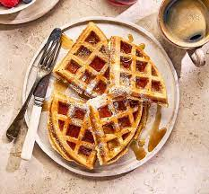

Waffles

Description
Waffles are a popular breakfast food that are typically made from
a batter consisting of flour, eggs, milk, sugar, and butter or oil.
The batter is cooked in a special waffle iron that imprints a distinctive
grid pattern on the surface of the waffle. Waffles are a classic breakfast food,
but they can also be enjoyed as a dessert or snack. Most importantly,
they can be made from scratch at home or purchased pre-made and frozen
from the grocery store.
Ingredients
- Eggs
- Flour
- Milk
- Oil
- Sugar
- Backing powder
- Salt
- Vanilla
- Cooking spray
Steps
- Whisk the eggs into a bowl.
- Add flour, milk and oil.
- Whisk in the suga.r
- Stir in the remaining ingredients.
- Pour the batter onto the hot, prepared waffle iron.
- Cook until golden brown and repeat with the remaining batter.
- **Optional: Add your choice of waffle topping: Blueberry sauce, nuts
Vanilla glaze, Nutella, Homemade whipped cream, fresh berries